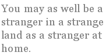

Peter Richards
An Adolescent Contemplates Leaving
Down by the Godstone quarry walks a man
or boy; a changeling of the heart and mind
thinking, in this still corner, what he can
of keeping and of leaving his own kind.
A kingfisher is there — and gone — like light
electric blue in nature’s blinking eye.
On off, a fish, a life, a day, a night;
it’s a big world, despite the things they say.
The ducks and insects come by hard-wired wings,
remembering the paths on which they’ve flown
— or DNA encoded rebirths — rings
of interaction round this central home.
They’re back again this year and will return
through altitudes and latitudes and death
and life and yet again and yet again they come:
faithful and fecund to the final breath.
But no more than the plants about the pool
has any of them pause to think; to doubt
the things they do. Condemned to be a fool
for lack of ordnance, an untutored scout
dropped down behind the lines of life, our man
and woman there who joins him, or does not,
(his thoughts by now have left the real plane)
can do no more than speculate on what
is to be won or lost. Familiar love
and comforts of the home and daily rounds
are compromised if we should set above
them the desire to break our childhood bonds.
Dark water underneath reflected sky
holds fetid mystery and it is cold,
but cannot be ignored. The wish to fly
beyond the view, to go forth as the bold
inspired adventurer to other climes
and know exotic sense and beauty, here,
in this warm flesh instead of children’s rhymes,
is stronger than old homelove, but the fear
of falling down into the dark restrains
the most of us. Someone has to go and get
some bastard vigour for recursive genes:
there’s always danger in attempting it.
Even the stay-at-homes must face the fact
that girls and boys next door loved by default
are dreamers too, your failure to act
is seen, like you your kids know what you ought
to do — don’t look for logic in their minds.
Beneath each limpid pool, cold drowning lurks
and our fantastic treasure’s paid in kind;
if you know love, you know that’s how it works.
The Dynamic Condition
The impact of expatriation on the ex-pat may well depend on how pat he was to start with. I’m not thinking of romantic nationalism so much as the sense of belonging. You may as well be a stranger in a strange land as a stranger at home.
Reasons for being, or feeling like, a stranger at home can be quite a few. Ethnicity is an obvious one and parents of mixed race or nationality may be another. A lot of people are effectively “born on the move” to parents in the diplomatic service or the military or some such. So strong and parochial are our xenophobic and pack animal instincts though, that moving to the other side of town can be enough. On the other hand, while it may be said that there’s some sort of reason for everything, it might just be that feeling outside of the pack is in some cases a fundamental characteristic of the individual rather than something that is brought about by external circumstance. As Andy Warhol said (I think), “The one thing you know about a small town is that you hate it and you’ve got to get out.”
There’s a bit of mob rule in the idea of exclusion. Most of us have felt or witnessed it at school. As such it would appear to be pretty fundamental to the human psyche. I think we’re drawn toward agreeing with the mob as well, in order to achieve or retain inclusion, so that the outsider is perceived as weak. In the days of assisted passages to Australia, I couldn’t count the times I saw agreement nodded all around when it was proposed that those who emigrated did so because “they failed to make it at home”. Erm — excuse me? — brave, adventurous pioneers, anyone? I guess not. And certainly no indictment of the teeming millions who fail to get up off their arses and go.
All of this is a sort of gripe about how immigrants and emigrants are effectively tarred and feathered by their status, so it doesn’t have to be done physically. It’s by no means true across the board and there are plenty of curious and enlightened people who are happy to learn and accept whatever crosses the perceived or tangible frontier. It’s just as well, I’d say.
If I were to carry on, even attempting to form some cogent thesis from this rambling, I might have to approach a conclusion of sorts. We can’t have that. Here’s to the dynamic condition. Go the ex-pat heroes!
Here endeth the dissertation.
Peter Richards: Ex-pat whose lineage runs back to primeval slime. Prior publications are limited to Chippy Weekly (2) and frequent light-hearted efforts in the Wood Shavings Review. There are unconfirmed rumours about Peter and the name of Earl Haig’s plume. Pass it on.
|